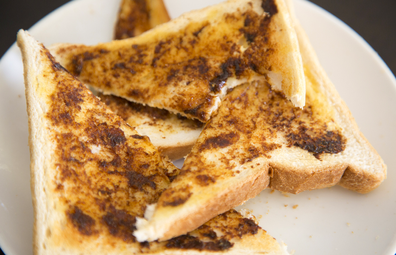

Recipe Page

Vegemtie and Butter Sandwich - The Old Fashioned Way
A traditional and questionably suitable and hearty breakfast, lunch, and dinner.
Ingredients
- Vegemite
- Butter
- Wheat Bread
Instructions
- Cut a slice of bread from the loaf.
- If the bread is more than a day old, then toast the bread until toasted to your satisfaction.
- Scoop some Vegemite from the bottle and spread it around the bread slice. Continue until the Vegemite mostly covers the bread slice
- This is the important part, the art of Vegemite: Take a bigger than usual (but not too big) scoop of butter and DONT SMEAR IT, rather lay it across the bread slice quickly.
- Make sure not to smear the Vegemite or spread it around so it blends in.
- Enjoy your warm slice of Vegemite. Eat Quickly because the butter may start to melt!
Click Here to learn more about the history of Vegemite.